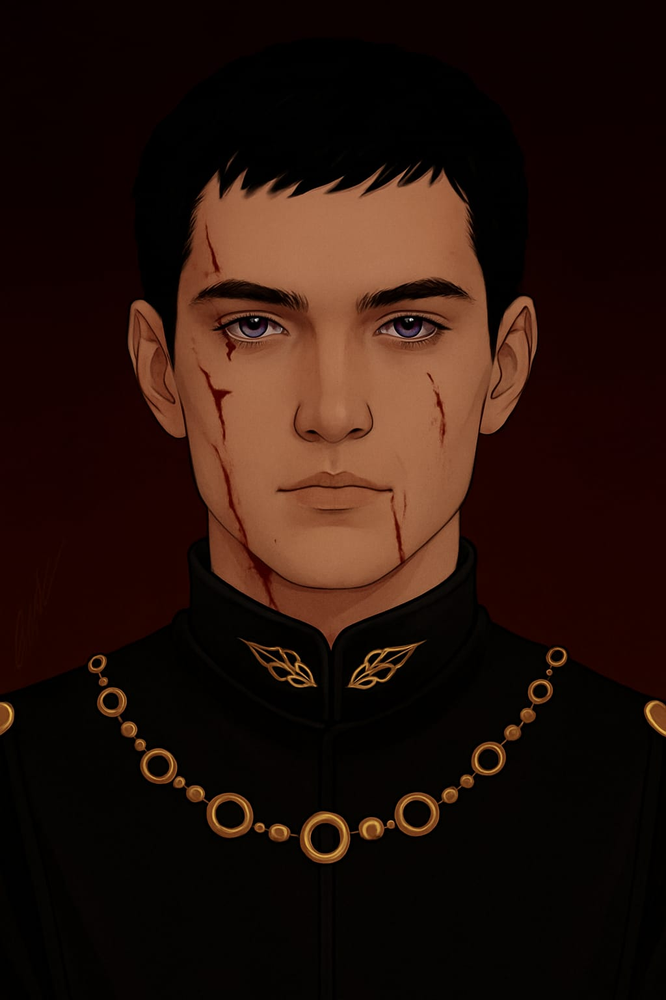
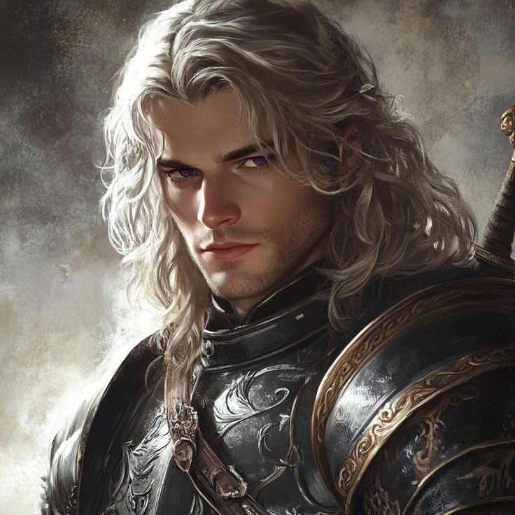
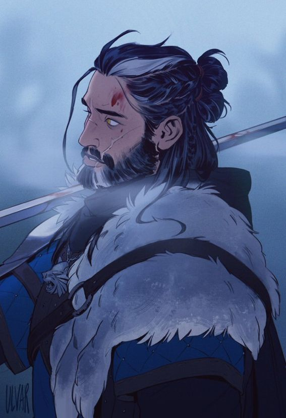
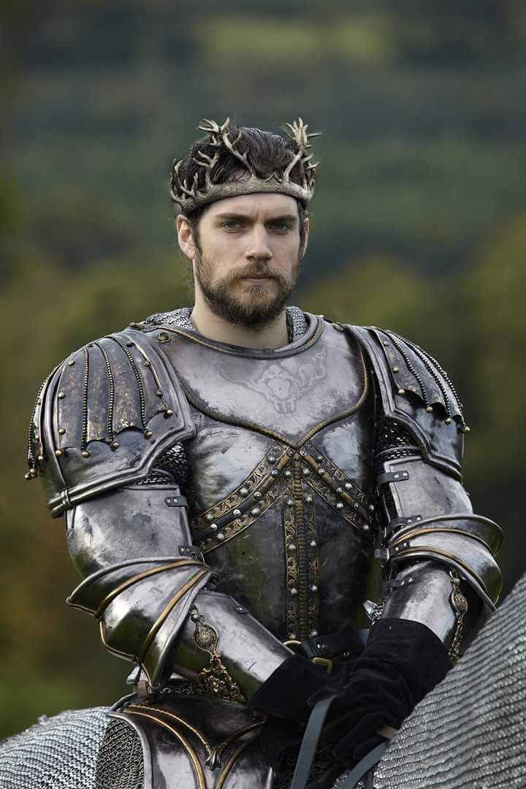

Lordes Soberanos

Senhor de Torrente da Agua Negra Baerion Blackfyre
Soberano de Torrente da Agua Negra e o Homem vivo com melhor fisico e força corporal

Príncipe de Pedra do Dragão: Baelon
Lorde Soberano de Pedra do Dragão e Herdeiro do Trono e Montador do maior Dragão vivo.

Senhor do Norte e um dos homens que melhor desempenhou o papel contra os adversarios do Rubro em uma das 4 batalhas uqe ocorreram
Guardião do Norte

Lorde de Karhold: Robert Karstark
Vassalo dos Stark

Senhor da Tempestade e Lorde Baratheon:Robert Baratheon
Guardião do Leste,finalista do primeiro Torneio,o lorde que mais matou soldados do lado de westeros contra o rubro

Senhor das Marés e Lorde de Driftmark: Daeron Velaryon
Velaryon ai

Senhora de Arbor: Margaery Redwyne
Senhora das Vinhas